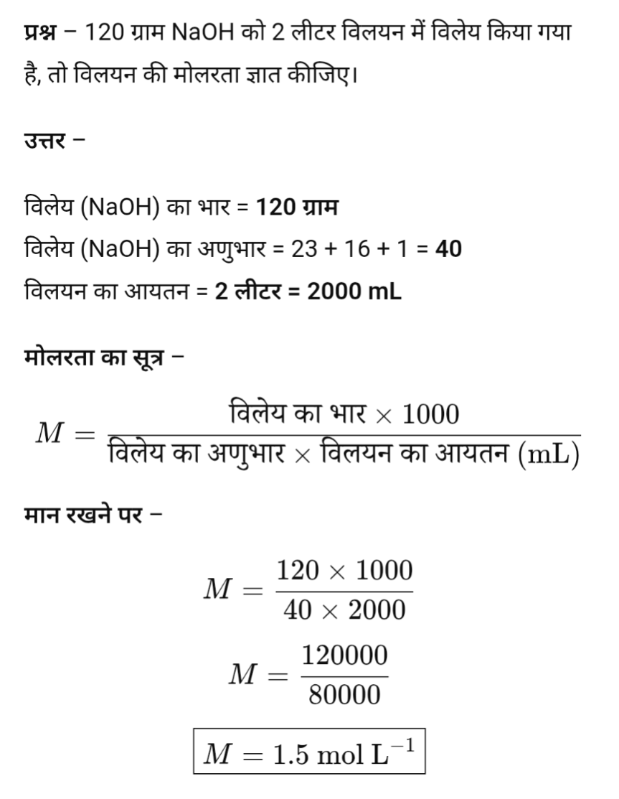
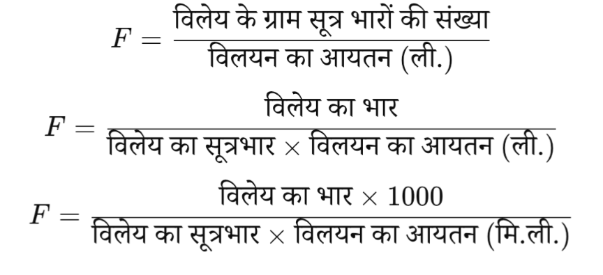
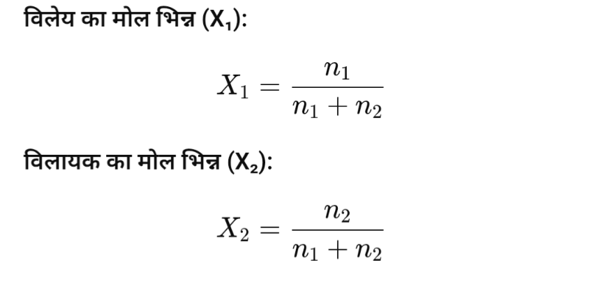

दो या दो से अधिक पदार्थों के समांगी मिश्रण को विलयन कहते हैं।
जैसे नमक और जल का विलयन।
विलयन में, जिस पदार्थ की मात्रा अधिक होती है उसे विलायक कहते हैं और जिसकी मात्रा कम होती है उसे विलेय कहते हैं।

सान्द्रता के आधार पर विलयन पाँच प्रकार के होते हैं।
- सान्द्र विलयन
- तनु विलयन
- संतृप्त विलयन
- असंतृप्त विलयन
- अतिसंतृप्त विलयन।
विलयन की सांद्रता को व्यक्त करने की निम्न इकाइयाँ हैं:
- मोलरता
- मोललता
- नॉर्मलता
- फॉर्मलता
- मोल भिन्न
- प्रतिशतता
- ppm Conc.
पदार्थ को मापने की निम्न तीन इकाइयाँ हैं:
- ग्राम मोल= भार / अणुभार
- ग्राम मोल तुल्यांक भार = भार / तुल्यांक भार
- ग्राम सूत्र भार = भार / सूत्रभार
किसी विलयन के एक लीटर आयतन में उपस्थित विलेय के ग्राम मोलों की संख्या को उस विलयन की मोलरता कहते हैं। इसे (M) से प्रदर्शित करते हैं।
अर्थात मोलरता

मोलरता इकाई मोल/लीटर है।



एक किग्रा विलायक मे उपस्थित विलेय के ग्राम मोलो की संख्या को मोललता कहते है। इसे m से व्यक्त करते हैं।
अर्थात मोललता

मोललता इकाई मोल/किलो ग्राम है।


मोलरता | मोललता | |
एक लीटर विलयन में उपस्थित विलेय के मोलों की संख्या मोलरता कहलाती है। | एक किलोग्राम विलायक में उपस्थित विलेय के मोलों की संख्या मोललता कहलाती है। | |
इसे आयतन में व्यक्त करते हैं। | इसे भार में व्यक्त करते हैं। | |
इसका मात्रक ग्राम मोल/लीटर है। | इसका मात्रक ग्राम मोल/किलोग्राम है। | |
इसमें आयतन की प्रधानता होती है। | इसमें भार की प्रधानता होती है। | |
यह तापमान से प्रभावित होती है। | यह तापमान से प्रभावित नहीं होती। |
एक लीटर विलयन में उपस्थित विलेय के ग्राम तुल्याकी भारो की संख्या को नार्मलता कहते है। इसे N व्यक्त करते हैं।
अर्थात नार्मलता

यदि NaOH की 4 ग्राम मात्रा 500 मिली विलयन में उपस्थित है, तो विलयन की नॉर्मलता ज्ञात कीजिए।
NaOH का तुल्यांक भार = 40
विलेय का भार = 4 ग्राम
विलयन का आयतन = 500 मि.ली. = 0.5 लीटर
नॉर्मलता का सूत्र:
मान रखने पर:
अतः विलयन की नॉर्मलता 0.2 N है।
यदि NaOH के 2 ग्राम 250 मिली. विलयन में उपस्थित हैं तो विलयन की नॉर्मलता ज्ञात कीजिए।
NaOH का तुल्यांक भार = 40
विलेय का भार = 2 ग्राम
विलयन का आयतन = 250 मि.ली. = 0.25 लीटर
नॉर्मलता का सूत्र:
मान रखने पर:
अतः विलयन की नॉर्मलता 0.2 N है।
एक लीटर विलयन में उपस्थित विलेय के ग्राम सुत्र भारो की संख्या को फार्मलता कहते है। इसे F व्यक्त करते हैं।
अर्थात फार्मलता

किसी विलयन में उपस्थित विलेय के या विलायक के मोलो की संख्या और विलयन मे उपस्थित सम्पूर्ण मोलो की संख्या के अनुपात को मोल भिन्न या मोल प्रभाज कहते है।
यदि किसी विलयन में विलेय के \(n_1\) मोल एवं विलायक के \(n_2\) मोल घुले हुए हों, तो इस विलयन में कुल मोलों की संख्या \(n_1+n_2\) होगी।

92 ग्राम एथिल ऐल्कोहॉल तथा 72 ग्राम जल के विलयन में एथिल ऐल्कोहॉल एवं जल का मोल-प्रभाज ज्ञात कीजिए।
एथिल ऐल्कोहॉल का अणुभार = 46
जल का अणुभार = 18
एथिल ऐल्कोहॉल के मोल
जल के मोल
कुल मोल
एथिल ऐल्कोहॉल का मोल-प्रभाज
जल का मोल-प्रभाज
विलियन के वे गुण जो विलेय की प्रकृति पर निर्भर न होकर विलेय के कणो की संख्या पर निर्भर होते है अणुसंख्यक गुण कहलाते हैं।
जैसे-
- वाष्प दाब का आपेक्षिक अवनमन
- विलयन का परासरण
- क्वथनांक का उन्नयन
- हिमांक का अवनमन

- वाष्प दाब – जब कोई द्रव उसकी वाष्प के साथ साम्यावस्था में होता है, तब वाष्प द्वारा द्रव की सतह पर लगाया गया दाब वाष्प दाब कहलाता है।
शुद्ध विलायक के वाष्प दाब को \(P_0\) से व्यक्त करते हैं।

- वाष्प दाब में अवनमन – जब किसी शुद्ध विलायक में कोई अवाष्पशील विलेय पदार्थ मिलाया जाता है, तो प्राप्त विलयन का वाष्प दाब कम हो जाता है। वाष्प दाब में इस कमी को वाष्प दाब अवनमन कहते हैं।
यदि शुद्ध विलायक का वाष्प दाब \(P_0\) तथा विलयन का वाष्प दाब \(P\) हो, तो
\[ \text{वाष्प दाब में अवनमन} = P_0 - P \]

- वाष्प दाब का आपेक्षिक अवनमन – किसी विलयन के वाष्प दाब में अवनमन तथा शुद्ध विलायक के वाष्प दाब के अनुपात को वाष्प दाब का आपेक्षिक अवनमन कहते हैं।
यदि शुद्ध विलायक का वाष्प दाब \(P_0\) तथा विलयन का वाष्प दाब \(P\) हो, तो
\[ \text{वाष्प दाब का आपेक्षिक अवनमन} = \frac{P_0 - P}{P_0} \]
अवाष्पशील विलेय के कण स्वयं वाष्प नहीं बनाते हैं। जब इन्हें किसी विलायक में मिलाया जाता है, तो ये विलायक के कणों के बीच स्थान ग्रहण कर लेते हैं तथा विलायक के कणों को सतह से वाष्प अवस्था में जाने से आंशिक रूप से रोकते हैं।
फलस्वरूप, विलायक के कम कण वाष्प अवस्था में पहुँच पाते हैं और विलयन का वाष्प दाब शुद्ध विलायक की अपेक्षा कम हो जाता है।

राउल्ट के नियम के अनुसार, स्थिर ताप पर किसी विलयन के वाष्पदाब में आपेक्षिक अवनमन, विलेय के मोल प्रभाज के बराबर होता है।
किसी विलयन का वाष्पदाब विलायक के मोल भिन्न के समानुपाती होता है।
आदर्श विलयन:
वे विलयन जो सांद्रण एवं ताप की सभी परिस्थितियों में राउल्ट के नियम का पूर्णतः पालन करते हैं, आदर्श विलयन कहलाते हैं।
उदाहरण: बेंजीन + टाल्यून
गुण:
- राउल्ट के नियम का पूर्णतः पालन होता है।
- आयतन परिवर्तन शून्य होता है।
अर्थात्
\[ \Delta V_{mixing}=0 \]
- एन्थैल्पी परिवर्तन शून्य होता है।
अर्थात्
\[ \Delta H_{mixing}=0 \]
अनादर्श विलयन:
वे विलयन जो सांद्रण एवं ताप की सभी परिस्थितियों में राउल्ट के नियम का पूर्णतः पालन नहीं करते हैं, अनादर्श विलयन कहलाते हैं।
उदाहरण: ऐसीटोन + बेंजीन
गुण:
- राउल्ट के नियम का पूर्णतः पालन नहीं होता है।
- आयतन परिवर्तन शून्य नहीं होता है।
अर्थात्
\[ \Delta V_{mixing}\ne0 \]
- एन्थैल्पी परिवर्तन शून्य नहीं होता है।
अर्थात्
\[ \Delta H_{mixing}\ne0 \]
| आदर्श विलयन | अनादर्श विलयन |
|---|---|
| ये राउल्ट के नियम का पूर्णतः पालन करते हैं। | ये राउल्ट के नियम का पूर्णतः पालन नहीं करते। |
|
आयतन परिवर्तन शून्य होता है।
\[ \Delta V_{mixing}=0 \] |
आयतन परिवर्तन शून्य नहीं होता।
\[ \Delta V_{mixing}\ne0 \] |
|
एन्थैल्पी परिवर्तन शून्य होता है।
\[ \Delta H_{mixing}=0 \] |
एन्थैल्पी परिवर्तन शून्य नहीं होता।
\[ \Delta H_{mixing}\ne0 \] |
| उदाहरण – बेंजीन + टाल्यून | उदाहरण – ऐसीटोन + बेंजीन |
अनादर्श विलयनों को उनकी प्रकृति के आधार पर दो भागों में विभाजित किया गया है।
- धन विचलन प्रदर्शित करने वाले अनादर्श विलयन
- ऋण विचलन प्रदर्शित करने वाले अनादर्श विलयन
1. धन विचलन प्रदर्शित करने वाले अनादर्श विलयन:
जिनका मान राउल्ट के नियम से प्राप्त मान से अधिक होता है, वे धन विचलन प्रदर्शित करने वाले अनादर्श विलयन कहलाते हैं।
उदाहरण:
- ऐसीटोन + कार्बन डाईसल्फाइड
- ऐसीटोन + एथिल एल्कोहल
- ऐसीटोन + बेंजीन
2. ऋण विचलन प्रदर्शित करने वाले अनादर्श विलयन:
जिनका मान राउल्ट के नियम से प्राप्त मान से कम होता है, वे ऋण विचलन प्रदर्शित करने वाले अनादर्श विलयन कहलाते हैं।
उदाहरण:
- क्लोरोफार्म + बेंजीन
- ऐसीटोन + ऐनीलीन
- क्लोरोफार्म + डाईएथिल ईथर
| धन विचलन प्रदर्शित करने वाले अनादर्श विलयन | ऋण विचलन प्रदर्शित करने वाले अनादर्श विलयन |
|---|---|
| इनका वाष्प दाब राउल्ट के नियम से प्राप्त मान से अधिक होता है। | इनका वाष्प दाब राउल्ट के नियम से प्राप्त मान से कम होता है। |
| विलयन में A–B अणुओं के बीच आकर्षण बल, A–A तथा B–B अणुओं के आकर्षण बल से कम होता है। | विलयन में A–B अणुओं के बीच आकर्षण बल, A–A तथा B–B अणुओं के आकर्षण बल से अधिक होता है। |
|
मिश्रण के समय ऊष्मा का अवशोषण होता है।
\[ \Delta H_{mixing}>0 \] |
मिश्रण के समय ऊष्मा का उत्सर्जन होता है।
\[ \Delta H_{mixing}<0 \] |
|
आयतन में वृद्धि होती है।
\[ \Delta V_{mixing}>0 \] |
आयतन में कमी होती है।
\[ \Delta V_{mixing}<0 \] |
| उदाहरण – ऐसीटोन + कार्बन डाईसल्फाइड, ऐसीटोन + एथिल एल्कोहल, ऐसीटोन + बेंजीन। | उदाहरण – क्लोरोफार्म + बेंजीन, ऐसीटोन + ऐनीलीन, क्लोरोफार्म + डाईएथिल ईथर। |
उत्तर:
ऐसा द्रव मिश्रण जो निश्चित ताप पर उबलता है तथा बिना संघटन बदले उसी ताप पर आसवित होता है, स्थिर क्वाथी मिश्रण (Azeotropic Mixture) कहलाता है।
यह दो प्रकार का होता है।
- निम्न क्वथन स्थिर क्वाथी मिश्रण
- उच्च क्वथन स्थिर क्वाथी मिश्रण
1. निम्न क्वथन स्थिर क्वाथी मिश्रण:
वे विलयन जो राउल्ट के नियम से धनात्मक विचलन प्रदर्शित करते हैं, निम्न क्वथन स्थिर क्वाथी मिश्रण कहलाते हैं। इनका वाष्पदाब अधिक होता है।
उदाहरण: ऐसीटोन तथा CS2 का विलयन।
2. उच्च क्वथन स्थिर क्वाथी मिश्रण:
वे विलयन जो राउल्ट के नियम से ऋणात्मक विचलन प्रदर्शित करते हैं, उच्च क्वथन स्थिर क्वाथी मिश्रण कहलाते हैं। इनका वाष्पदाब कम होता है।
उदाहरण: ऐसीटोन तथा क्लोरोफॉर्म का विलयन।
स्थिर क्वाथी मिश्रण के अवयवों को साधारण आसवन द्वारा पृथक नहीं किया जा सकता, क्योंकि यह निश्चित ताप पर बिना संघटन बदले आसवित होता है।
विलयनों का वह गुण जिसमें विलायक के अणु अर्धपारगम्य झिल्ली के माध्यम से कम सांद्र विलयन से अधिक सांद्र विलयन की ओर स्वतः प्रवाहित होते हैं, परासरण (Osmosis) कहलाता है।
ऐसी झिल्ली जो केवल विलायक के अणुओं को अपने में से आने-जाने देती है तथा विलेय के अणुओं को रोक देती है, अर्धपारगम्य झिल्ली कहलाती है।
उदाहरण: अण्डे की झिल्ली, बकरे का आमाशय आदि जैविक झिल्लियाँ तथा कॉपर फेरोसायनाइड एक कृत्रिम अर्धपारगम्य झिल्ली है।
कृत्रिम अर्धपारगम्य झिल्ली का नाम कॉपर फेरोसायनाइड (Copper Ferrocyanide) है।
किशमिश को जल में डालने पर बाहर का जल कम सांद्र होता है। इसलिए जल अर्धपारगम्य झिल्ली के माध्यम से किशमिश के अंदर प्रवेश करता है। इस प्रक्रिया को अंतःपरासरण (Endosmosis) कहते हैं। परिणामस्वरूप किशमिश फूल जाती है।
अंगूर को चीनी के गाढ़े घोल में डालने पर बाहर का घोल अधिक सांद्र होता है। इसलिए अंगूर के अंदर का जल बाहर निकल जाता है। इस प्रक्रिया को बहिर्परासरण (Exosmosis) कहते हैं। परिणामस्वरूप अंगूर सिकुड़ जाता है।
| परासरण | विसरण |
|---|---|
| 1. परासरण में केवल विलायक अणुओं की गति होती है। | 1. विसरण में विलायक तथा विलेय दोनों के अणुओं की गति होती है। |
| 2. परासरण के लिए अर्धपारगम्य झिल्ली आवश्यक होती है। | 2. विसरण के लिए किसी झिल्ली की आवश्यकता नहीं होती। |
| 3. परासरण केवल द्रवों में होता है। | 3. विसरण ठोस, द्रव तथा गैस तीनों में होता है। |
| 4. परासरण एक विशेष जैविक प्रक्रिया है। | 4. विसरण एक सामान्य भौतिक प्रक्रिया है। |
परासरण की घटना को प्रदर्शित करने के लिए थिसिल कीप (Thistle Funnel) का प्रयोग किया जाता है।
एक थिसिल कीप के मुँह पर एक जन्तु झिल्ली (अर्धपारगम्य झिल्ली) बाँध देते हैं। थिसिल कीप में कुछ ऊँचाई तक चीनी का सांद्र विलयन भरते हैं। इसके बाद थिसिल कीप को जल से भरे एक बीकर में इस प्रकार डुबोते हैं कि झिल्ली जल में डूबी रहे।
कुछ समय बाद थिसिल कीप की नली में विलयन का स्तर ऊपर उठने लगता है।
यह घटना परासरण को प्रदर्शित करती है, क्योंकि जल के अणु अर्धपारगम्य झिल्ली में से होकर कम सांद्र विलयन (जल) से अधिक सांद्र विलयन (चीनी के घोल) की ओर प्रवाहित होते हैं, जिससे नली में विलयन का स्तर ऊपर उठ जाता है।
परासरण का जैविक क्रियाओं में महत्वपूर्ण योगदान है। इसके प्रमुख महत्व निम्नलिखित हैं।
- परासरण द्वारा ही पेड़-पौधों की जड़ें भूमि से जल का अवशोषण करती हैं तथा यही जल पौधे के अन्य भागों तक पहुँचता है।
- मनुष्य की शिराओं एवं धमनियों में रक्त का प्रवाह परासरण दाब से प्रभावित होता है।
- रोगियों को चढ़ाया जाने वाला ग्लूकोज़ तथा अन्य पोषक तत्व परासरण द्वारा रक्त में पहुँचते हैं तथा कोशिकाओं द्वारा अवशोषित होते हैं।
- परासरण कोशिकाओं में जल का संतुलन बनाए रखता है तथा कोशिका की स्फीति (Turgidity) बनाए रखने में सहायक होता है।
- परासरण गुर्दों द्वारा यूरिया जैसे अपशिष्ट पदार्थों के उत्सर्जन में महत्वपूर्ण भूमिका निभाता है।
परासरण दाब वह न्यूनतम दाब है जिसे किसी विलयन पर इस प्रकार लगाया जाए कि अर्धपारगम्य झिल्ली के माध्यम से होने वाला परासरण रुक जाए। इसे \(\pi\) द्वारा प्रदर्शित किया जाता है।
यदि किसी विलयन पर उसके परासरण दाब से अधिक दाब लगाया जाए, तब विलायक के अणु विलयन से निकलकर शुद्ध विलायक की ओर प्रवाहित होने लगते हैं। इस प्रक्रिया को विपरीत परासरण (Reverse Osmosis), उत्क्रम परासरण अथवा प्रतिलोम परासरण कहते हैं।
1. समपरासरी (Isotonic) विलयन:
दो ऐसे विलयन जिनका परासरण दाब समान होता है, समपरासरी विलयन कहलाते हैं। इनके बीच जल का कोई शुद्ध प्रवाह नहीं होता।
उदाहरण: 0.91% NaCl का विलयन रक्त के साथ समपरासरी होता है।
2. अतिपरासरी (Hypertonic) विलयन:
यदि किसी विलयन का परासरण दाब दूसरे विलयन की अपेक्षा अधिक हो, तो वह अतिपरासरी विलयन कहलाता है।
ऐसे विलयन में कोशिकाएँ सिकुड़ जाती हैं क्योंकि जल कोशिका से बाहर निकल जाता है।
उदाहरण: सांद्र NaCl का विलयन रक्त की अपेक्षा अतिपरासरी है।
3. अधःपरासरी (Hypotonic) विलयन:
यदि किसी विलयन का परासरण दाब दूसरे विलयन की अपेक्षा कम हो, तो वह अधःपरासरी विलयन कहलाता है।
ऐसे विलयन में कोशिकाएँ फूल जाती हैं क्योंकि जल कोशिका के भीतर प्रवेश करता है।
उदाहरण: शुद्ध जल रक्त की अपेक्षा अधःपरासरी है।
वाण्ट हॉफ का नियम :
वाण्ट हॉफ के नियम के अनुसार—तनु विलयन का परासरण दाब गैस के दाब के समान व्यवहार करता है।
गणितीय रूप में :
\[ \pi V = nRT \] \[ \pi = \left(\frac{n}{V}\right)RT \] \[ \pi = CRT \]जहाँ \(\frac{n}{V}=C\) (मोलर सांद्रता)
जहाँ—
- \(\pi\) = परासरण दाब
- \(V\) = विलयन का आयतन
- \(n\) = विलेय के मोल
- \(R\) = गैस नियतांक
- \(T\) = परम ताप
- \(C\) = मोलर सांद्रता
तनु विलयन के लिए वाण्ट हॉफ का नियम लागू होता है, जिसके अनुसार—
\[ \pi V = nRT \]अथवा,
\[ \pi = \frac{nRT}{V} \]चूँकि \(R\), \(T\) तथा \(V\) नियत रहते हैं, अतः
\[ \pi \propto n \]अर्थात् परासरण दाब केवल विलेय कणों (अणुओं/आयनों) की संख्या पर निर्भर करता है, उनके प्रकार या प्रकृति पर नहीं।
इसलिए परासरण दाब एक अणुसंख्यक (Colligative) गुण है।
उत्तर :
मान लेते हैं कि किसी विलयन में W ग्राम विलेय को V लीटर विलयन में घोला गया है तथा विलेय का अणुभार M है।
विलेय के मोलों की संख्या —
\[ n=\frac{W}{M} \]वाण्ट हॉफ के नियम के अनुसार —
\[ \pi V=nRT \] \[ \pi V=\frac{W}{M}RT \] \[ M=\frac{WRT}{\pi V} \](दिया है : \(R = 0.0821\,L\,atm\,mol^{-1}\,K^{-1}\))
उत्तर :
दिया है —
- यूरिया का द्रव्यमान \((W) = 6\,g\)
- विलयन का आयतन \((V) = 1\,L\)
- ताप \((T) = 300\,K\)
- \(R = 0.0821\,L\,atm\,mol^{-1}\,K^{-1}\)
- यूरिया \((NH_2CONH_2)\) का अणुभार \((M) = 60\)
परासरण दाब का सूत्र —
\[ \pi=\frac{WRT}{MV} \] \[ \pi=\frac{6\times0.0821\times300}{60\times1} \] \[ \pi=\frac{147.78}{60} \] \[ \pi=2.463\;atm \]क्वथनांक (Boiling Point) :
किसी द्रव का क्वथनांक वह ताप होता है जिस पर उसका वाष्प दाब वायुमण्डलीय दाब के बराबर हो जाता है और द्रव उबलना प्रारम्भ कर देता है।
उदाहरण : शुद्ध जल का क्वथनांक 100°C होता है।
क्वथनांक उन्नयन (Elevation in Boiling Point) :
जब किसी शुद्ध विलायक में कोई अवाष्पशील विलेय पदार्थ मिलाया जाता है, तो प्राप्त विलयन का क्वथनांक शुद्ध विलायक के क्वथनांक की अपेक्षा बढ़ जाता है। क्वथनांक में होने वाली इस वृद्धि को क्वथनांक उन्नयन कहते हैं। इसे \(\Delta T_b\) द्वारा प्रदर्शित करते हैं।
\[ \Delta T_b = T - T_0 \]जहाँ—
- \(T\) = विलयन का क्वथनांक
- \(T_0\) = शुद्ध विलायक का क्वथनांक
मोलल क्वथनांक उन्नयन स्थिरांक (Molal Elevation Constant) :
हम जानते हैं कि—
\[ \Delta T_b \propto m \] \[ \Delta T_b = K_b m \]जहाँ \(K_b\) एक स्थिरांक है जिसे मोलल क्वथनांक उन्नयन स्थिरांक कहते हैं।
जब 1 मोल अवाष्पशील विलेय को 1 किलोग्राम विलायक में घोला जाता है, तब विलयन के क्वथनांक में होने वाली वृद्धि को मोलल क्वथनांक उन्नयन स्थिरांक कहते हैं।
इसे \(K_b\) द्वारा प्रदर्शित करते हैं।
इकाई :
\[ K\,kg\,mol^{-1} \]जब 1 ग्राम-अणु विलेय को 100 ग्राम विलायक में घोला जाता है, तब विलयन के क्वथनांक में होने वाली वृद्धि को ग्राम अणुक क्वथनांक उन्नयन स्थिरांक कहते हैं।
इसे \(K_{100}\) द्वारा प्रदर्शित करते हैं।
अथवा
क्वथनांक उन्नयन का क्या कारण है?
जब किसी शुद्ध विलायक में अवाष्पशील विलेय मिलाया जाता है, तो विलयन का वाष्पदाब कम हो जाता है।
इसलिए विलयन का वाष्पदाब वायुमण्डलीय दाब के बराबर करने के लिए शुद्ध विलायक की अपेक्षा अधिक ताप की आवश्यकता होती है।
इसी कारण अवाष्पशील विलेय वाले विलयन का क्वथनांक शुद्ध विलायक की अपेक्षा अधिक होता है।
उत्तर:
माना \(W_1\) ग्राम विलेय को \(W_2\) ग्राम विलायक में घोला गया है तथा विलेय का आण्विक द्रव्यमान \(M_1\) है।
अतः मोललता
\[ m=\frac{1000W_1}{M_1W_2} \]अब, क्वथनांक उन्नयन का सूत्र —
\[ \Delta T_b=K_bm \] \[ \Delta T_b= K_b\times \frac{1000W_1}{M_1W_2} \]अतः विलेय का आण्विक द्रव्यमान —
\[ \boxed{ M_1= \frac{1000K_bW_1} {\Delta T_b\,W_2} } \]जहाँ —
- \(K_b\) = मोलल क्वथनांक उन्नयन स्थिरांक
- \(\Delta T_b\) = क्वथनांक उन्नयन
हिमांक (Freezing Point) :
हिमांक वह ताप है जिस पर किसी पदार्थ की ठोस अवस्था तथा द्रव अवस्था साम्यावस्था में होती हैं, अर्थात् वह ताप जिस पर द्रव जमना प्रारम्भ कर देता है।
शुद्ध विलायक का हिमांक \(T_0\) से प्रदर्शित किया जाता है।
हिमांक अवनमन (Depression in Freezing Point) :
जब किसी शुद्ध विलायक में कोई अवाष्पशील विलेय पदार्थ मिलाया जाता है, तो प्राप्त विलयन का हिमांक शुद्ध विलायक के हिमांक से कम हो जाता है। हिमांक में होने वाली इस कमी को हिमांक अवनमन कहते हैं। इसे \(\Delta T_f\) द्वारा प्रदर्शित करते हैं।
\[ \Delta T_f = T_0 - T \]जहाँ —
- \(T_0\) = शुद्ध विलायक का हिमांक
- \(T\) = विलयन का हिमांक
मोलल हिमांक अवनमन स्थिरांक (Molal Depression Constant) :
हम जानते हैं कि —
\[ \Delta T_f \propto m \]अथवा,
\[ \Delta T_f = K_f m \]जहाँ \(K_f\) एक स्थिरांक है, जिसे मोलल हिमांक अवनमन स्थिरांक कहते हैं।
जब 1 मोल अवाष्पशील विलेय को 1 किलोग्राम विलायक में घोला जाता है, तब विलयन के हिमांक में होने वाली कमी को मोलल हिमांक अवनमन स्थिरांक कहते हैं।
इसे \(K_f\) द्वारा प्रदर्शित करते हैं।
इकाई :
\[ K\,kg\,mol^{-1} \]जब 1 ग्राम-अणु विलेय को 100 ग्राम विलायक में घोला जाता है, तब विलयन के हिमांक में होने वाली कमी को ग्राम अणुक हिमांक अवनमन स्थिरांक कहते हैं।
इसे \(K_{100}\) द्वारा प्रदर्शित करते हैं।
उत्तर:
माना \(W_1\) ग्राम विलेय को \(W_2\) ग्राम विलायक में घोला गया है तथा विलेय का आण्विक द्रव्यमान \(M_1\) है।
अतः मोललता
\[ m=\frac{1000W_1}{M_1W_2} \]अब, हिमांक अवनमन का सूत्र —
\[ \Delta T_f=K_f m \] \[ \Delta T_f= K_f \times \frac{1000W_1}{M_1W_2} \]अतः विलेय का आण्विक द्रव्यमान —
\[ \boxed{ M_1= \frac{1000K_fW_1} {\Delta T_f\,W_2} } \]जहाँ —
- \(K_f\) = मोलल हिमांक अवनमन स्थिरांक
- \(\Delta T_f\) = हिमांक अवनमन
उत्तर:
किसी द्रव में किसी गैस के घुलने की क्षमता को गैसों की द्रवों में विलेयता कहते हैं।
गैसों की द्रवों में विलेयता मुख्य रूप से दाब और ताप पर निर्भर करती है—
दाब का प्रभाव:
दाब बढ़ाने पर गैसों की द्रवों में विलेयता बढ़ जाती है। (इसी कारण ठंडे पेय पदार्थों में CO₂ को अधिक दाब पर घोलकर रखा जाता है।)
ताप का प्रभाव:
ताप बढ़ाने पर गैसों की द्रवों में विलेयता कम हो जाती है, क्योंकि गैस के अणु बाहर निकलने लगते हैं।
उत्तर:
हेनरी के नियम के अनुसार— नियत ताप पर, किसी द्रव में घुली हुई गैस की मात्रा उस गैस के आंशिक दाब के समानुपाती होती है।
अर्थात:
\[ p \propto x \] \[ p = K_H \times x \]जहाँ—
- \(p\) = गैस का आंशिक दाब
- \(x\) = द्रव में घुली गैस का मोल अंश
- \(K_H\) = हेनरी स्थिरांक
उदाहरण:
CO₂ युक्त सोडा की बोतल बंद रहने पर उसमें CO₂ का दाब अधिक होता है और CO₂ गैस जल में अधिक घुली रहती है।
बोतल खोलने पर दाब कम हो जाता है, जिससे CO₂ जल में कम घुलती है और CO₂ गैस बाहर निकलने लगती है।
उत्तर:
वाण्ट हॉफ गुणांक (Van’t Hoff factor) वह संख्या है जो यह बताती है कि किसी विलेय के अणु विलयन में कितने कणों में विभाजित (या संयोजित) हो जाते हैं।
इसे i से प्रदर्शित किया जाता है।
\[ i = \frac{\text{वास्तविक कणों की संख्या}}{\text{अपेक्षित कणों की संख्या}} \]
यदि कोई विलेय विलयन में विघटित (dissociation) होता है तो \(i > 1\) तथा यदि संयोजित (association) होता है तो \(i < 1\) होता है।
अनुप्रयोग:
- आण्विक द्रव्यमान की सही गणना में (विशेषकर इलेक्ट्रोलाइट्स के लिए)
- हिमांक अवनमन तथा क्वथनांक उन्नयन के संशोधित सूत्रों में
- परासरण दाब (Osmotic pressure) की गणना में
- विलेय के विघटन/संयोजन की मात्रा ज्ञात करने में
महत्व:
- यह वास्तविक और सामान्य (theoretical) आण्विक द्रव्यमान के बीच अंतर को समझने में मदद करता है।
- असामान्य गुणों (colligative properties) की व्याख्या करता है।
- इलेक्ट्रोलाइट विलयनों के व्यवहार को समझने में उपयोगी है।